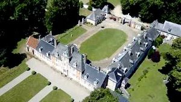
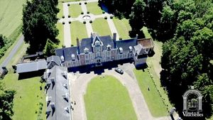
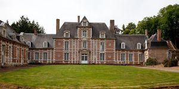

Recensement Jean-Claude Truffet
| Département | 80 — Somme |
| Canton | Flixecourt |
| Commune | Vauchelles lès-Domart |
| Type d'édifice | Château |
| Période d'origine | XVII |
| Coordonnées GPS | 50° 03' 21" Nord, 2° 03' 23" Est |



VAUCHELLES Antoine de Blottefière, chevalier, gouverneur de la ville et du château de Doullens, acquiert en 1595 le fief de Vauchelles sous Ailly. Il n'est pas impossible qu'une première maison seigneuriale ait existé, dont des vestiges pourraient subsister dans le soubassement du bâtiment des communs sur la basse cour. Son fils cadet François de Blottefière, vicomte de Domart, capitaine d'infanterie au régiment de Picquigny puis lieutenant du roi en Picardie, fait construire vers 1630 l'actuelle demeure (logis principal, ailes basses, bâtiment des communs, mur de clôture). La demeure était distribuée en enfilade simple, de part et d'autre d'un escalier central rampe-sur-rampe. Chaque niveau du logis principal devait abriter une salle et une chambre, sans doute complétées de pièces de service, de commodités et de logements secondaires dans les ailes et les étages de combles. François de Blottefière rattache en 1670 le domaine de Mouflers à celui de Vauchelles. Nicolas de Blottefière, marquis, cède le domaine en 1756 à sa fille Marguerite de Blottefière, épouse de Jean-Baptiste du Sauzay, marquis d'Amplepuis, seigneur de Ronno. C'est à cette époque que l'escalier est décentré vers l'est, afin d'aménager un vestibule au rez-de-chaussée et une nouvelle chambre au centre du premier étage. Cette pièce de style rocaille présente un lambris dont le revers porte l'inscription à la craie: "héno", qui peut être interprétée comme une signature et une datation, ou alors comme un simple graffiti indiquant à tout le moins que le lambris était posé à cette date. Dans la deuxième moitié du XVIIIe siècle, les propriétaires entreprennent d'importants travaux, ajout de pavillons en retour d'équerre sur la cour (1767), qui présente un appareil comparable ; remaniement du mur de la cour et construction du portail principal (1771).
VAUCHELLES Les deux pavillons devaient abriter d'une part la cuisine, le logement du chapelain ou le chartrier. À l'édicule d'angle du pavillon est, abritant le fournil, répondait un édicule similaire, quoique plus petit, à l'angle du pavillon ouest, qui servait peut-être de bûcher. Vétuste, cette construction a été détruite au début des années 1970. Par ailleurs, sur les plans d'intendance des années 1770, on distingue attenante à la chapelle une petite aile en retour d'équerre sur jardin, dans le prolongement de celle située sur la cour, peut-être pour abriter une dépendance de jardin. Saisi sous la Révolution, le domaine de Vauchelles est restitué en 1815 à Louis Joseph Henri, marquis du Sauzay, ancien colonel et chevalier de Saint-Louis, époux d'Hortense des Essarts. En 1842, il passe à leur fille unique Agathe-Hortense du Sauzay, épouse d'Auguste-Gabriel, comte de Gomer. C'est peut-être elle qui fait redécorer deux pièces de l'aile ouest, un salon en style néo-rocaille et une petite salle à manger en style néo-Henri II. Elle fait ériger à ses frais la nouvelle église paroissiale avant de laisser en 1881 le domaine de Vauchelles à sa nièce et filleule, Agathe des Essarts, épouse du comte de Saint-Sauveur. Ses descendants le possèdent toujours. À la fin du XIXe ou au début du XXe siècle sont aménagés les garages et le parterre de pelouse au centre de la cour. Les aménagements intérieurs, sans caractère particulier à l'exception de ceux déjà mentionnés, datent pour la plupart des XIXe ou XXe siècle. Durant la seconde guerre mondiale, le château a été occupé par l'organisation allemande de génie militaire Todt, le mobilier. En remplacement d'une simple pelouse, un jardin régulier a été aménagé au sud du logis, sur les plans de l'architecte amiénois Patrick Delamotte, établis par devis du 24 mars 1983.
Famille de François de Blottefière"
Château de Vauchelles GPS : 50° 03' 21" Nord, 2° 03' 23" Est